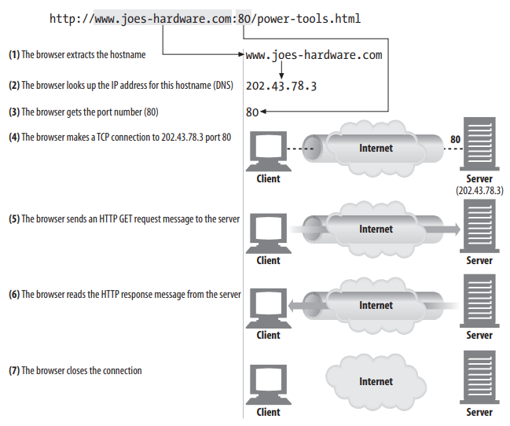

Institute of Business Administration Karachi
CSE 308: Web Based Application Development - Fall 2025
Web Based Application Development
Lecture 7
16th September 2025
Agenda
- How does the web work?
- Web Servers
- HTTP
- Architectural Components of the Web
- Demo: PHP built in server
Some content of today's lecture is from the book:
HTTP: The Definitive Guide
To visit a website, you simply type its domain name or web address into your browser.
An IP address is a unique numeric identifier (up to 12 digits, separated by periods). Every device on the internet has its own IP address, much like a phone number for that computer.
The unique number returned by the DNS server allows your browser to connect to the web server hosting the requested site.
A web server is a computer that stays online continuously and is designed to deliver web pages to users.
Once connected, the web server sends the requested page back to your web browser.
What is a Web Server?
A web server is software (and sometimes hardware) that delivers web content to clients over the internet using the HTTP/HTTPS protocol.
In simple terms, it handles requests from browsers and responds with the appropriate web pages, files, or data.
How Does a Web Server Work?
- Set up connection: Accept a client connection or close if not allowed.
- Receive request: Read the HTTP request from the client.
- Process request: Interpret the request and decide what action to take.
- Access resource: Retrieve the resource (file, script, or data) requested.
- Construct response: Build an HTTP response with correct headers and content.
- Send response: Return the response to the client.
- Log transaction: Record details of the request and response.
Static vs. Dynamic Content
- Static: Server directly returns files (HTML, CSS, images).
- Dynamic: Server runs applications (PHP, Python, Node.js) to generate responses.
Popular Web Servers
- Apache HTTP Server
- Nginx
- Microsoft IIS
Web Servers in Modern Applications
Today, web servers often sit behind reverse proxies, load balancers, and work with application servers to handle complex workloads.
Example: Nginx as a reverse proxy forwarding requests to a Laravel/PHP application server.
HTTP
HyperText Transfer Protocol (HTTP) is the foundation of data communication on the web. It defines how clients (browsers) and servers exchange requests and responses.
It is a stateless, application-layer protocol built on top of TCP/IP.
HTTP Resources
Everything on the web is treated as a resource.
- HTML documents
- Images (JPG, PNG, SVG)
- Stylesheets (CSS)
- Scripts (JavaScript)
- APIs returning JSON or XML
Resources are identified using URLs.
HTTP Transaction
- Client sends a request (GET, POST, etc.)
- Server processes and returns a response
Composite web pages require separate HTTP transactions for each embedded resource
A Closer Look at an HTTP Message
| Request | Response |
|---|---|
GET /index.html HTTP/1.1
Host: example.com
User-Agent: Chrome/123
Accept: text/html
|
HTTP/1.1 200 OK
Date: Mon, 15 Sep 2025
Content-Type: text/html
Content-Length: 1024
|
TCP Connection
URL Syntax
scheme://hostname:port/path?query#fragment
- Scheme: http, https, ftp
- Hostname: example.com
- Port: 80 (default) or custom
- Path: /products/item1
- Query: ?id=10&sort=asc
- Fragment: #section2
HTTP Encode / Decode
URLs must use percent-encoding for special characters:
| Character | Encoded |
|---|---|
| Space | %20 |
| : | %3A |
| / | %2F |
| ? | %3F |
HTTP Status Codes
| Class | Examples | Meaning |
|---|---|---|
| 1xx | 100 Continue | Informational |
| 2xx | 200 OK, 201 Created | Success |
| 3xx | 301 Moved Permanently, 302 Found | Redirection |
| 4xx | 400 Bad Request, 404 Not Found | Client Error |
| 5xx | 500 Internal Server Error, 503 Service Unavailable | Server Error |
HTTP Methods
HTTP defines different methods to indicate the desired action on a resource.
| Method | Usage | Idempotent? |
|---|---|---|
| GET | Retrieve a resource (read-only) | Yes ✅ |
| POST | Create a new resource / submit data | No ❌ |
| PUT | Replace an existing resource | Yes ✅ |
| PATCH | Partially update a resource | No ❌ |
| DELETE | Remove a resource | Yes ✅ |
| HEAD | Like GET but returns only headers | Yes ✅ |
| OPTIONS | Describes supported methods | Yes ✅ |
👉 Idempotent = multiple identical requests produce the same result.
MIME Types
MIME tells the browser what type of content is being sent:
| Type | Example |
|---|---|
| text/html | Web pages |
| image/png | Images |
| application/json | APIs |
| video/mp4 | Videos |
Architectural Components of the Web
Beyond clients and servers, the web includes additional intermediary components that improve performance, security, and flexibility.
Proxies
A proxy is an intermediary that sits between the client and the server.
- Forward Proxy: represents the client (e.g., for anonymity, filtering).
- Reverse Proxy: represents the server (e.g., load balancing, SSL termination).
Caches
A cache stores frequently accessed responses to reduce load and latency.
- Browser Cache - stores local copies of resources.
- Proxy Cache - shared by many users to save bandwidth.
- CDN (Content Delivery Network) - global distributed caches.
Gateways
A gateway acts as a translator between different protocols.
- Example: HTTP client connects to a gateway that speaks FTP, SMTP, or database protocols.
- Common use: API Gateways in microservices architecture.
Tunnels
A tunnel allows secure passage of data through an intermediary without interpretation.
- Used in HTTPS: HTTP traffic is tunneled through TCP port 443.
- Also used in VPNs for secure communication.
Agents
An agent is software that acts on behalf of the user.
- User Agents → browsers like Chrome, Firefox, Safari.
- Automated Agents → crawlers, bots, and scripts.